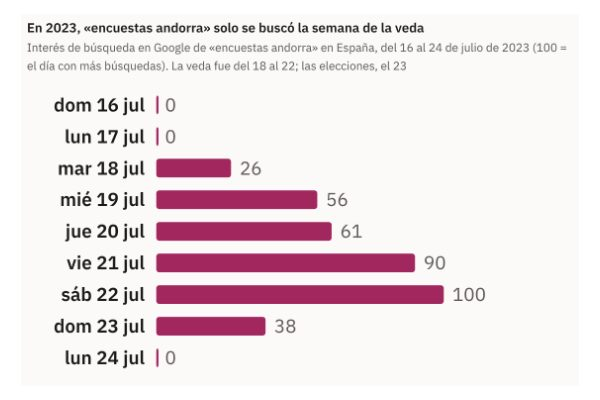

Actualidad · El debate a cuatro · España
Debate a cuatro: hora, dónde verlo y en qué orden hablan Sánchez, Feijóo, Abascal y Colau
Es este jueves a las 22.00, en La 1, Antena 3, laSexta, Telecinco, Cuatro y La Séptima. El último debate a varios, en 2023, fue el menos visto desde 2015: 4,2 millones.
Por Nacho G. del Álamo · · Actualizado el
Cada párrafo lleva una etiqueta: dato (cifra comprobable con las fuentes), patrón (relación que se repite, sin afirmar la causa), hipótesis (explicación posible, sin dos fuentes independientes) o contexto (hechos y declaraciones publicados por otros, enlazados). Cómo verificamos
A qué hora es el debate a cuatro
ContextoEl debate a cuatro de las elecciones generales del 29N es este jueves 26 de noviembre, a las 22.00, y durará casi dos horas, hasta las 0.00 aproximadamente, según El Debate. Participan Pedro Sánchez (PSOE), Alberto Núñez Feijóo (PP), Santiago Abascal (Vox) y Ada Colau (Frente Amplio). Lo organiza la Academia de Televisión y lo modera su presidenta, María Casado, según Mundiario.
ContextoEs el último debate de la campaña, según Infobae. La campaña acaba el viernes 27 a medianoche, el sábado es la jornada de reflexión y el domingo se vota.
Dónde ver el debate
ContextoLa Academia da la señal a las cadenas que quieran emitirlo. Lo darán en directo, según Mundiario:
- La 1, el Canal 24 Horas y TVE Internacional, y en internet RTVE.es y RTVE Play
- Antena 3
- laSexta
- Telecinco
- Cuatro
- La Séptima
- Varias televisiones autonómicas, entre ellas RTVA, CMM, CARTV, CVMC, RTRM, IB3, RTPA y RTVM
ContextoTambién lo emitirá la cadena portuguesa CNN Portugal.
En qué orden hablan
ContextoEl sorteo decidió los atriles y los turnos. De izquierda a derecha, en pantalla, estarán Abascal, Sánchez, Feijóo y Colau. Abre Colau, con una valoración de la legislatura de un minuto y medio, y le siguen Sánchez, Feijóo y Abascal. En el minuto de oro final el orden cambia: empieza Sánchez, siguen Abascal y Colau, y cierra Feijóo, según El Debate y Mundiario.
ContextoEl debate tiene cinco bloques de 20 minutos, con cinco minutos para cada candidato en cada uno. Son estos, en este orden, según El Debate:
- Vivienda
- Economía y fiscalidad
- Política social y servicios públicos
- Lucha contra la corrupción y regeneración democrática
- Migración y política exterior
ContextoHabrá dos pausas publicitarias de tres minutos, después del segundo y del cuarto bloque. Los candidatos no pueden llevar dispositivos electrónicos, y los tiempos los controlan árbitros de la Federación Española de Baloncesto, según las dos mismas fuentes.
Cuánto pesaba cada atril en 2023
DatoLos partidos de los cuatro candidatos sacaron 322 de los 350 diputados en las elecciones generales de 2023, y 22.084.945 votos, el 89,5 % de los válidos. El PP y Vox sumaron 170; el PSOE y Sumar, 152. Ninguno de los dos pares llegó a los 176 de la mayoría absoluta: los 28 escaños restantes eran de ERC, Junts, EH Bildu, el PNV, el BNG, Coalición Canaria y UPN.
Ver la tabla
| Candidato | Partido en 2023 | Votos | Escaños |
|---|---|---|---|
| Sánchez | PSOE | 7.821.777 | 121 |
| Feijóo | PP | 8.161.117 | 137 |
| Abascal | Vox | 3.057.068 | 33 |
| Colau | Sumar | 3.044.983 | 31 |
ContextoLa comparación de Colau con Sumar es aproximada: en 2023 Sumar llevaba dentro a Podemos, que esta vez se presenta por su cuenta, fuera del Frente Amplio.
Cuánta gente ve un debate a varios
DatoEl último debate con más de dos candidatos a la presidencia, el de Sánchez, Abascal y Yolanda Díaz del 19 de julio de 2023, lo vieron de media 4,2 millones de personas, con un 34,6 % de cuota: el menos visto de los seis desde 2015 y un 60 % menos que el de 2016, el que más audiencia tuvo, según los datos de Kantar que recopila Barlovento Comunicación.
Ver la tabla
| Fecha | Candidatos | Espectadores (millones) | Cuota de pantalla (%) |
|---|---|---|---|
| 7-12-2015 | Sánchez, Iglesias, Sáenz de Santamaría y Rivera | 9,2 | 48,2 |
| 13-6-2016 | Rajoy, Sánchez, Iglesias y Rivera | 10,5 | 57,0 |
| 22-4-2019 | Sánchez, Casado, Iglesias y Rivera (1.º) | 8,9 | 43,8 |
| 23-4-2019 | Sánchez, Casado, Iglesias y Rivera (2.º) | 9,5 | 48,7 |
| 4-11-2019 | Sánchez, Casado, Iglesias, Rivera y Abascal | 8,6 | 52,7 |
| 19-7-2023 | Sánchez, Abascal y Díaz | 4,2 | 34,6 |
ContextoEl cara a cara entre Sánchez y Feijóo del jueves pasado lo vieron 10,2 millones, según el informe de Barlovento que recoge El Español (Europa Press).
Preguntas frecuentes
¿A qué hora es el debate a cuatro?
El jueves 26 de noviembre de 2026, a las 22.00. Está previsto que acabe hacia las 0.00.
¿Dónde se puede ver el debate a cuatro?
En La 1, el Canal 24 Horas, Antena 3, laSexta, Telecinco, Cuatro y La Séptima, en varias televisiones autonómicas y en RTVE Play.
¿Quién participa en el debate a cuatro?
Pedro Sánchez (PSOE), Alberto Núñez Feijóo (PP), Santiago Abascal (Vox) y Ada Colau (Frente Amplio). Modera María Casado.
¿Quién abre y quién cierra el debate?
Abre Colau. En el minuto de oro final empieza Sánchez y cierra Feijóo.
¿Cuántos escaños sacaron en 2023 los partidos del debate?
322 de 350: PP 137, PSOE 121, Vox 33 y Sumar 31, que entonces incluía a Podemos.
Resultados de las elecciones generales 2026 · Qué pasa después del 29N
Método y fuentes
- Qué se compara
- Los seis debates de las elecciones generales con tres o más candidatos a la presidencia desde 2015, por audiencia media, y los escaños y votos que sacaron en 2023 los partidos de los cuatro candidatos de 2026.
- Límites
- Las audiencias son solo de televisión, sin internet, con datos de Kantar. Hora, cadenas, turnos y bloques, según la información publicada por los medios antes del debate. Colau encabeza el Frente Amplio, que no existía en 2023: se compara con Sumar, que entonces incluía a Podemos, hoy fuera del Frente Amplio. Sin encuestas: el 29N está en la veda (artículo 69.7 de la LOREG).
- Cómo se calcula
- Audiencias: tabla de Barlovento Comunicación con datos de Kantar, los debates con tres o más candidatos. Escaños y votos de 2023: resultados del Ministerio del Interior, con el voto exterior. Script: actualidad/src/resumenes/debate_cuatro.py. Cifras reproducibles con los scripts del expediente de la pieza. Metodología de Actualidad · Metodología del Atlas
- Fuentes
- El Debate, posiciones, turnos y bloques del debate a cuatro (25-11-2026)
- Mundiario, horarios, turnos, bloques y cadenas del debate a cuatro (26-11-2026)
- Infobae, el debate a cuatro, en directo (26-11-2026)
- Barlovento Comunicación, audiencia de los debates electorales (datos de Kantar, 19-7-2023)
- El Español (Europa Press), audiencia del cara a cara de 2026 (20-11-2026)
- Ministerio del Interior, resultados de las elecciones generales de 2023
- Autoría
- Nacho G. del Álamo
- Revisión de datos y texto
- Nacho G. del Álamo, 26 de noviembre de 2026
- Publicado · actualizado
- 26 de noviembre de 2026 · 26 de noviembre de 2026, a las 09.30
- Correcciones
- Ninguna.
Serie «Camino al 29N»: 154 piezas
- De los 25 convocados de De la Fuente nacidos en España, 15 nacieron donde ganó el PSOE en 2023 y 8 donde ganó el PP; en Puente Genil, el PP ganó por 31 votos
- Feijóo hace campaña con UPN en Pamplona, donde el PSOE ganó 77 de las 151 secciones en 2023; con UPN y PP sumados, se habría quedado en 49
- Al PP le faltaron 9.793 votos en 2023 para recuperar un diputado en Gipuzkoa; Feijóo arropa hoy a su candidato, atacado en Hernani
- Si la abstención fuera un partido, en 2023 habría quedado por delante del ganador en más de la mitad de las grandes ciudades y en la mitad de las secciones de España
- Voto por correo para las elecciones generales del 29N: el plazo para pedirlo acaba el jueves 19; en 2023, una de cada tres solicitudes llegó en las dos últimas semanas
- Elecciones generales: una de cada tres secciones cambió de ganador entre 2019 y 2023
- Debate Sánchez Feijóo: hora, dónde verlo y quién gana el cara a cara
- Elecciones generales: en Gijón, Vox sacó en 2023 su mejor resultado en Somió, el barrio más rico: 17,0 %
- Veda de encuestas: hasta cuándo se pueden publicar las del 29N
- Cómo votar en las elecciones generales del 29N: horario, qué llevar y cómo saber tu colegio
- A qué hora se sabrán los resultados de las elecciones generales del 29N
- Encuestas Andorra 29N: qué son las encuestas prohibidas y qué dice la ley
- Después de las elecciones generales del 29N: cuándo se constituyen las Cortes y los plazos de la investidura
- Elecciones generales del 29N en cifras: electores, escaños, candidaturas y mesas de cada provincia
- Escrutinio de las elecciones generales del 29N: cómo seguirlo en directo y cuándo es definitivo
- Voto en blanco y voto nulo en las elecciones generales del 29N: qué cuenta y a quién afecta
- Programa electoral de PP, PSOE, Vox y Frente Amplio: qué propone cada uno el 29N
- Getafe-Atlético: en la ciudad del Coliseum, el PSOE pasó de ganar en 112 de las 122 secciones a ganar en 74, y el PP se quedó a 2.182 votos
- El derbi sevillano se juega en barrios del PP: en Nervión, el del Sánchez-Pizjuán, ganó en 37 de 41 secciones; en la ciudad, el PSOE fue primero en 286 de 521
- Estás aquíDebate a cuatro: hora, dónde verlo y en qué orden hablan Sánchez, Feijóo, Abascal y Colau
- Ver las 154 piezas de la serie
Más datos: elecciones generales del 29N de 2026: fecha y escaños por provincia · resultados de las elecciones generales 2026 (29N) y los de 2023 · dónde y cómo votar el 29N: colegio electoral, voto por correo y plazos.
Sigue leyendo
 Camino al 29NVoto en blanco y voto nulo en las elecciones generales del 29N: qué cuenta y a quién afecta
Camino al 29NVoto en blanco y voto nulo en las elecciones generales del 29N: qué cuenta y a quién afecta Camino al 29NEscrutinio de las elecciones generales del 29N: cómo seguirlo en directo y cuándo es definitivo
Camino al 29NEscrutinio de las elecciones generales del 29N: cómo seguirlo en directo y cuándo es definitivo Camino al 29NElecciones generales del 29N en cifras: electores, escaños, candidaturas y mesas de cada provincia
Camino al 29NElecciones generales del 29N en cifras: electores, escaños, candidaturas y mesas de cada provincia Camino al 29NDespués de las elecciones generales del 29N: cuándo se constituyen las Cortes y los plazos de la investidura
Camino al 29NDespués de las elecciones generales del 29N: cuándo se constituyen las Cortes y los plazos de la investidura
Camino al 29NEncuestas Andorra 29N: qué son las encuestas prohibidas y qué dice la ley Getafe-AtléticoGetafe-Atlético: en la ciudad del Coliseum, el PSOE pasó de ganar en 112 de las 122 secciones a ganar en 74, y el PP se quedó a 2.182 votos
Getafe-AtléticoGetafe-Atlético: en la ciudad del Coliseum, el PSOE pasó de ganar en 112 de las 122 secciones a ganar en 74, y el PP se quedó a 2.182 votos